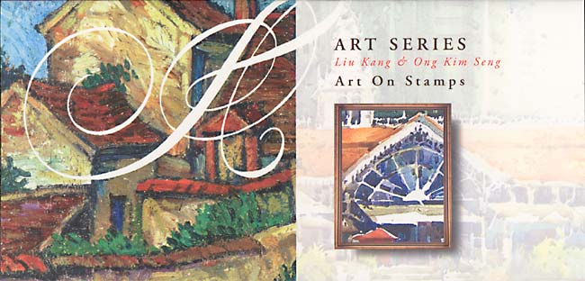
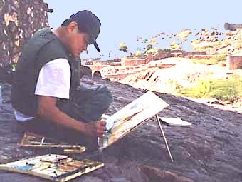
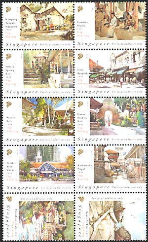
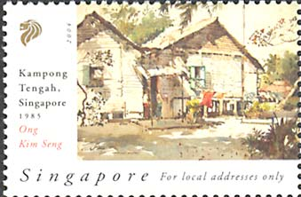
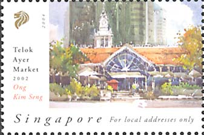
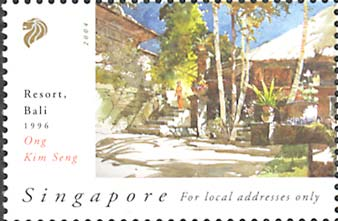
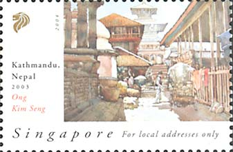

Ong Kim Seng
Obviously, it is a pleasure for the author of the Art On Stamps site to relate about a new series entitled "Art on Stamps". I speak about the new series that the Singapore Philatelic Bureau launched on the 18 February 2004, in the form of two se-tenant sheets, labeled "For Local Addresses Only". I have recently got this issue, directly form the Singapore Post, in the form of a presentation pack. Please see below its nicely designed front page. The beginning of the contemporary art in Singapore can be traced back to 1930s to a group of immigrant artists from China, often referred as the "Nanyang artists". The Nanyang Style of art was an integration of traditional Chinese ink and wash painting, and was influenced by the School of Paris and local subject matter. By synthesizing these three elements, the Nanyang artists were able to imbue a sense of local consciousness within their works. During the 1950s the Nanyang artists had extended their aesthetic explorations to Bali and since then Balinese indigenous art has become a major influence on the Nanyang Style. This was seen as an issue of regionalism in the early art history of Singapore. Nanyang Style became the mainstream in visual arts practice in Singapore until it was replaced by Abstract Expressionism and Pop art in the 1970s (source).

ONG, KIM SENG was born in Singapore and has been a full-time artist since 1985. He has participated in group and solo exhibitions at Singapore and in the United States, China, United Kingdom, Japan , Australia, Belgium, Federal Republic Of Germany, France, Middle East, Taiwan, Hong Kong, and the Asian Countries. He was President of the Singapore Watercolor Society from 1991 to 2001 when he become Honorary President, in which capacity he interacts with other watercolor organizations in the other parts of the world.
His collectors include Queen Elizabeth II of England, the Prime Minister of the People's Republic Of China, the Secretary-General of the United Nations, President of the Republic of Korea, Prime Minister of the Kingdom of Thailand, the President of the Republic of the Philippines; the Prime Minister of Japan, the Prime Minister of India and many museums worldwide.

His works, auctioned by Sotheby's in Hong
Kong and by Christie's, are now auctioned annually in Singapore and in the
region. He is the Organising Chairman of the ASIAN WATERCOLORS' 97
SINGAPORE, the first ever international watercolor exhibition to be held in
Singapore.
Ong Kim Seng was Organizing Chairman of Asian
Watercolors' 97 Singapore the first international watercolor exhibition to
be held in Singapore. He was also the vice-chairman of SINGAPORE ART 97. He
has been an Art Advisor to the National Arts Council since 1998 and is a
life Fellow of the National University of Singapore's Centre of the Arts (source).

We display above the second se-tenant sheets of the Art Series, featuring ten paintings of Ong Kim Seng, issued by the Singapore Philatelic Service on 18 February 2004.
 |
 |
For local addresses only. Ong Kim Seng: 1985. Kampong Tengah, Singapore, 1985. Telok Ayer Market, 2002.
 |
 |
For local addresses only. Ong Kim Seng: Resort, Bali, 1996. Kathmandu, Nepal, 2003.
This closes our short presentation of two painters, representing two successive generation of Singapore artists, who were in contact with and were partially influenced by the modern Western art, but who resisted to its siren song and created or continue to create works that are appreciated by the public at large, and not just by a restricted audience of Abstract Expressionists fans.
Links: